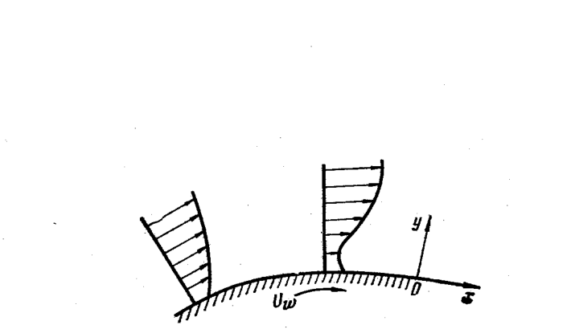
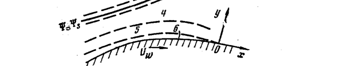
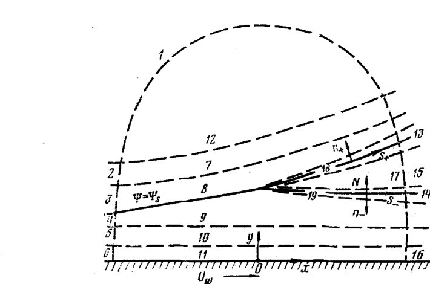
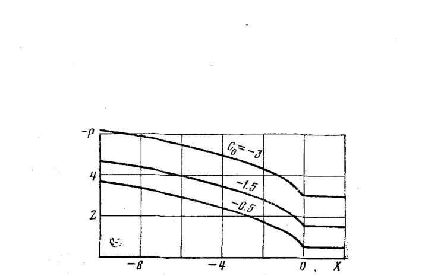

01中文摘要
用大雷诺数下Navier-Stokes方程的渐近分析研究不可压缩层流边界层的非定常分离，考虑分离点向上游移动的情形。在分离点运动加速度满足一定限制时，局部解可将时间作为参数处理。与定常情形相同，分离在强局部压力梯度作用下自发发生；重要差别是非定常分离机制是“无粘”的：黏性只在很薄的壁层内起作用，外部回流与混合层由无粘方程控制。借助运动表面与固定表面之间的坐标变换，可将非定常分离与运动壁面上的定常分离类比，并给出分离点附近压力、边界层厚度和壁面剪应力的渐近结构。
02阅读说明
理论分析（渐近分析）论文。材料为英译本第829–837页（PDF第1–9页），PDF第10页仅是下一篇论文（Larin，氢气点火）的开头，与本篇无关。正文公式文本层有OCR损坏，已回读原PDF第830–835页（6页）核对关键式；Fig.1–4为扫描图，原图注只有“Fig. n”，图内细节以正文区域编号说明为准。信息完整度较高：推导链、区域划分、相似解与适用条件均有交代；数值解本身引自文献[21]，本文未给出计算细节。 文章类型：期刊
03一句话核心与三句话摘要
用匹配渐近展开证明：下游运动壁面上的定常分离与上游移动的非定常分离等价，且其分离机制是“无粘”的。
- 已有边界层理论在给定逆压梯度下于分离点出现Goldstein型奇性，无法越过分离点；本文改以R→∞的Navier–Stokes渐近分析，研究向下游运动壁面上的定常分离，以类比分离点向上游移动的非定常分离。 AI概括
- 在二维不可压、R→∞、壁面速度U_w为O(1)常值的条件下，作者构造了分离点前（区域1–6）与相互作用区（区域7–19）的匹配渐近解：主层局部无粘，仅薄壁层11有粘性，边界层厚度按ln(−x)增长，相互作用区尺度为O(R^{-1/4})，并化为含单参数C0的相似方程组(3.1)。 AI概括
- 结论是：分离仍由大的局部逆压梯度自发诱发，但粘性只起“抹平间断”的作用，故机制为无粘；当分离点移动的时间尺度满足σ^{-1}(R)<O(R^{-1/4})时流动准定常、时间仅作为参数进入，从而与运动壁面定常分离的类比成立。 原文明确
04核心内容清单
| 要点 | 类型 | 重要性 | 原文依据 | 属性 |
|---|---|---|---|---|
| 建立非定常分离（分离点以有限速度上游移动）与运动壁面（壁面向下游运动）上定常分离的坐标等价，并据此研究后者。 | 问题设定/等价性 | A | 第829–830页，摘要与引言；第6节(6.1) | 原文明确 |
| 运动壁面使分离前速度剖面的最小值离开壁面，零摩擦点一般不在物面；分离点x=0位于y=Y0(R)，Y0→0。 | 流动结构 | A | 第830页，Fig.1、式(1.2)后论述 | 原文明确 |
| 分离点邻域压力与零流线形状由自由流线理想流体理论给出：p1=p∞−2k(−x)^{1/2}+k²(−x)+O[(−x)^{3/2}]，y=(4/3)kx^{3/2}+O(x^{5/2})。 | 外部极限/边界条件 | A | 第830页，式(1.1)、(1.2) | 原文明确 |
| 边界层主层在x→−0时局部无粘，展开为(1.4)；位移效应主要由Ψ=Ψ_s两侧的非线性无粘区3、4承担，而非固定壁面分离的三层结构中的下层。 | 渐近结构 | A | 第831页式(1.4)；第832–833页 | 原文明确 |
| 匹配给出α=α_min=1；解在Ψ=Ψ_s邻域正则并满足零摩擦条件，故不需再引入区域3a。 | 推导结论 | A | 第831–832页，式(1.5)–(1.9) | 原文明确 |
| 粘性只出现在薄壁层6；其方程化为Weber方程，λ0=0.7979，壁面摩擦按ln(−x)增长，边界层厚度按−(2a0)^{-1}ln(−x)对数增长。 | 关键定量结果 | A | 第832页，式(1.13)–(1.16) | 原文明确 |
| 当x=O(R^{-1/4})时前述展开失效，进入边界层与外势流相互作用的区域；该区用上半平面解析函数f=P12+iV12及Hilbert型关系(2.12)–(2.14)闭合。 | 相互作用区理论 | A | 第833–835页，式(2.1)–(2.14) | 原文明确 |
| 整个相互作用区化为只含单参数C0的相似方程组(3.1)，与层流尾流衰减问题相同；文献[21]数值结果表明对所有C0<0有解，Fig.4给出P(X)。 | 相似解/数值引用 | A | 第834–835页，式(3.1)，Fig.4 | 原文明确 |
| x>0下游压力主项为常数，混合层相似解特征值D0=−0.87574，并驱动回流区15；这证实了第2节关于下游压力恒定的假设。 | 下游结构 | B | 第835–836页，式(4.1)–(4.3) | 原文明确 |
| 小壁面速度情形按ε(R)与R^{-1/4}比较分三类；ε=R^{-1/4}时分离点位于壁层内y=O(R^{-1/4})，相互作用区后为混合层而非粘性壁层。 | 参数分区 | B | 第836页，第5节 | 原文明确 |
| 非定常类比成立的判据：σ^{-1}(R)<O(R^{-1/4})（σ(R)>O(R^{1/4})）时流动准定常、时间仅作参数；Brillouin–Villat极限下条件为σ(R)>O[R^{-1/4}ε^{1/2}(R)]。 | 适用条件/核心结论 | A | 第836–837页，第6节，式(6.1) | 原文明确 |
| 分离仍由大的局部正压梯度自发产生，但机制是“无粘”的；粘性作用仅为抹平间断。 | 机制结论 | A | 第829页摘要；第834页；第837页第7节 | 原文明确 |
05引言：研究问题与领域缺口
【原文明确】引言指出，平面定常不可压层流大R数分离已有自诱导分离、拐点分离、细长翼型绕流等理论（文献[1–7]），超声速情形则由Neiland、Stewartson–Williams等用边界层与外势流相互作用而非Goldstein奇性解决（[8–10]）。作者要研究的是非定常分离，或等价地“运动壁面上的定常分离”，二者通过随分离点运动与随固定分离点运动的两套坐标系的转换相联系（第829–830页）。文中强调，在边界层理论框架内（给定正压梯度）此类问题存在与Goldstein奇性类似的奇性；按Moore–Rott–Sears判据，运动壁面上平面定常边界层分离点处速度与摩擦同时为零，且该点一般不在物面上（第830页）。【AI概括】因此研究目标是：不用给定压梯度，而让边界层自身诱导局部压力，构造R→∞下分离点上游移动的局部解，并给出其适用条件。
06流动条件与几何构型
| 项目 | 数值/描述 | 依据 | 备注 |
|---|---|---|---|
| 流体/流动类型 | 不可压、平面二维、层流 | 第829页摘要；第830页第1节 | 全文无压缩性、无三维、无湍流效应 |
| Reynolds数 | R=U∞L/ν→∞ | 第830页，式(1.3)前定义 | 渐近极限，非有限Re计算 |
| 参考长度/速度 | 长度按物面特征长度L无量纲化；速度按自由流线极限值U∞无量纲化 | 第830页 | 压力增量按ρU∞²无量纲化（注意：本篇不是2ρU∞²） |
| 几何 | 二维平面光滑壁面；坐标x沿物面、y垂直物面；分离点x=0处y=Y0(R)→+0 | 第830页式(1.2)后；Fig.1 | 零流线在分离点离开物面 |
| 壁面运动 | 第1–4节：壁面以O(1)常值速度U_w向下游运动（x,y坐标系中） | 第830页第1节；式(1.3) | 第5节改为U_w=ε(R)Ũ_w，0<ε≪1 |
| 外部极限压力 | x<0：p1=p∞−2k(−x)^{1/2}+k²(−x)+O[(−x)^{3/2}]；x>0：p=p∞+O(x^β)，β>1 | 第830页，式(1.1) | k>0、k=O(1)，由全局解确定 |
| 边界条件 | 壁面Ψ=0：u=U_w，Y=V=0；外缘Ψ→∞：u→U1(x) | 第830页，式(1.3) | 无滑移；U1(x)=1+2k(−x)^{1/2}+O(−x) |
| 上游初始条件参数 | a0>0、Ψ_s>0由上游初始条件确定；区域2中U2(Ψ)≈a0(Ψ−Ψ_s)^α | 第831页，式(1.4)后 | 决定零摩擦流线位置与局部尺度 |
| 下游压力常数 | B0<0、B0=O(1)，确定x*>0的压力值 | 第834页，式(2.13) | 由区域17的流动在Sec.4证实为常数 |
| 非定常时间尺度 | σ(R)为分离点移动的时间尺度；准定常条件σ^{-1}(R)<O(R^{-1/4}) | 第836–837页，第6节 | 分离点速度−ẋ0(t)为有限值；Brillouin–Villat极限下条件改为σ(R)>O[R^{-1/4}ε^{1/2}(R)] |
07核心现象与关键参数
| 参数 | 定义 | 数值 | 关系/说明 | 依据 |
|---|---|---|---|---|
| 相互作用区流向尺度 | 使展开(1.4)、(1.16)各项同阶的x尺度 | x=O(R^{-1/4})，相似变量x*=R^{1/4}x=O(1) | 压力与速度扰动同阶O(R^{-1/4}) | 第833页，式(2.1)前及(2.2) |
| 压力函数相似参数C0 | C0=2^{-1}a0^{1/2}k^{-1/2}B0 | C0<0为有解区间；Fig.4给C0=−3、−1.5、−0.3 | 相似方程组(3.1)的唯一参数 | 第834–835页，第3节；式(3.1) |
| Weber方程特征值λ0 | 区域6壁层问题(1.14)中使解不含指数增长项的唯一值 | λ0=0.7979 | 决定壁面摩擦系数∂u/∂y=λ0k(2U_w)^{1/2}R^{1/2}ln(−x)+O(1) | 第832页，式(1.14) |
| 边界层厚度增长系数 | G2(x)的奇性部分 | G2(x)=−(2a0)^{-1}ln(−x)+O(1) | 厚度随−ln(−x)增长 | 第832页，式(1.16) |
| α_min | 区域3展开u=(−x)^αf3(η3)的最小相容指数 | α=α_min=1 | 匹配区域2与零摩擦条件给出；低于1无解 | 第831–832页，式(1.5)–(1.9) |
| 下游混合层特征值D0 | 混合层相似方程(4.1)在η→−∞的解常数 | D0=−0.87574 | 决定回流区卷吸与区域15速度尺度 | 第835页，式(4.1) |
| 下游压力常数B0 | x*>0时压力主项p=p∞+R^{-1/4}B0 | B0<0，O(1)，数值由全局解确定 | 进入混合层速度U8=√(−2B0)+…、U9=−√(−2B0)+… | 第835页，第4节 |
| 非定常时间尺度判据 | 时间导数项O[σ^{-1}(R)]与定常主项O(R^{-1/4})比较 | σ^{-1}(R)<O(R^{-1/4})，即σ(R)>O(R^{1/4}) | 满足时准定常，时间作为参数；ε=R^{-1/2}时非定常性在σ=R^{-1/2}量级出现 | 第836–837页，第6节 |
08方法与数据
【原文明确】方法为匹配渐近展开（Van Dyke[16]）。第1节从自由流线理想流体模型给出的分离点邻域压力(1.1)与零流线形状(1.2)出发，把分离点前边界层写成von Mises形式(1.3)，按区域2（主层，局部无粘）、区域3/4（Ψ=Ψ_s两侧的非线性无粘区）、区域5、区域6（薄壁粘性层）展开并匹配，得到指数α与各层解。第2节处理x=O(R^{-1/4})的相互作用区，划分区域7–12：主层7、延续区8/9、壁层10/11、外势流12；用上半平面解析函数f(z)=P12+iV12及Hilbert型关系(2.12)–(2.14)闭合。第3节把全部关系化为相似形式(3.1)，其数值解引自文献[21]。第4节处理x>0的下游混合层与回流区（区域13–19）。第5节讨论小壁面速度U_w=ε(R)Ũ_w的极限。第6节用坐标变换(6.1)把非定常问题化为运动壁面问题并给出准定常判据。【AI概括】全文无实验、无CFD；数值工作仅为对相似方程(3.1)的既有数值解引用，文中未给出网格、离散格式或误差信息。
| 项目 | 内容 | 依据 | 备注 |
|---|---|---|---|
| 总体方法 | 大R数极限下的匹配渐近展开（Van Dyke方法） | 第830页，引言；第829页摘要 | 非数值、非实验 |
| 分离点前边界层方程 | 二维定常不可压边界层方程，von Mises形式(1.3) | 第830页，式(1.3) | Ψ=R^{1/2}ψ，Y=R^{1/2}y，V=R^{1/2}v |
| 外部无粘极限 | 自由流线理想流体模型给出的(1.1)、(1.2)，对所有流型通用 | 第830页 | k>0由全局解确定；文中未推导该外部解 |
| 区域分解 | 区域1–6（分离点前）与7–19（相互作用区及下游）；逐区展开并匹配 | 第831–836页；Fig.2、Fig.3 | 区域3/4为非线性无粘区，区域6/11为粘性壁层 |
| 相互作用区闭合 | 上半平面解析函数f(z)=P12+iV12与Hilbert型关系(2.12)–(2.14) | 第834–835页 | 复变函数方法，解引自[18,19] |
| 相似解数值结果 | 方程组(3.1)的数值解引自文献[21]（Sychev 1979, Uch. Zap. TsAGI 10(5)） | 第834–835页，第3节 | 本文未给出离散方法、网格或误差；仅用“存在性”和P(X)曲线 |
| 非定常类比 | 坐标变换(6.1)：t1=σt，x1=x−σẋ0(t)，y1=y；u1=−ẋ0(t)u，v1=v，p1=p | 第836页，式(6.1) | 变换后方程多出−σ^{-1}(R)ẋ0(t)∂u/∂t、σ^{-1}(R)∂u/∂t、σ^{-1}(R)∂v/∂t项 |
09核心推导与公式
先在运动壁面坐标系中构造分离点前的局部渐近解，发现主层无粘、只有薄壁层有粘，且位移厚度按ln(−x)增长；当x小到O(R^{-1/4})时展开失效，改用边界层—外势流相互作用的解析函数关系闭合；再把整个系统化为与尾流衰减相同的相似方程；最后用坐标变换把运动壁面解搬到非定常分离问题并给出准定常条件。
关键假设
- 二维、定常、不可压、层流，R=U∞L/ν→∞
- 壁面以O(1)常值速度U_w向下游运动（第1–4节）
- 外部极限为带自由流线的理想流体分离流，分离点邻域压力与零流线形状由(1.1)、(1.2)给出，k>0且k=O(1)
- 分离前速度剖面在离壁某点取极小并与零摩擦点重合；区域2中U2(Ψ)≈a0(Ψ−Ψ_s)^α，a0、Ψ_s>0
- 区域3在x→−0时局部无粘，对应α>2/5
- 壁面速度在非定常问题中随时间变化，但变化尺度受σ(R)限制；分离点以有限速度−ẋ0(t)移动
推导过程
所有带自由流线的理想流体分离模型在分离点邻域都给出一致的压力奇性(1.1)和零流线形状(1.2)。k>0是O(1)常数，由全局解确定；坐标x沿物面从分离点量起。
以Ψ=R^{1/2}ψ、Y=R^{1/2}y、V=R^{1/2}v把二维定常不可压边界层方程写成(1.3)。壁面Ψ=0处u=U_w、Y=V=0；外缘Ψ→∞处u→U1(x)，且U1(x)=1+2k(−x)^{1/2}+O(−x)。
压梯度在x→−0奇异，使区域2主层局部无粘。将解展开为(1.4)：首项为y=0（固定壁面、k=0极限）的剖面U2(Ψ)，第二项由压梯度驱动；G2(x)为待定函数，Y2=∫U2^{-1}dΨ。
速度剖面极小点与零摩擦点重合；在Ψ=Ψ_s上令U2≈a0(Ψ−Ψ_s)^α。第二项与首项同阶的层厚满足Ψ−Ψ_s=O[(−x)^α]，故取(1.5)；设区域3局部无粘（α>2/5），积分得(1.6)，匹配区域2给出a1=a0²。为满足Ψ=Ψ_s上摩擦为零，先试探引入粘性区3a；但3a的齐次问题（Weber方程）一般只有零解，非平凡解仅当β1=1，匹配又给出α=α_min=1，且解在Ψ=Ψ_s邻域正则，因此3a不必要。
取α=1后，区域3（Ψ>Ψ_s一侧）与区域4（对称侧）的解为(1.9)、(1.10)；G3=G2+(4a0)^{-1}ln(−x)+O(1)，G4=G2+(4a0)^{-1}ln(−x)（原文式(1.9)、(1.10)符号略有差别，以原文为准）。区域5按区域2同型展开(1.11)，匹配得U5=Uw+2b0Ψ lnΨ+O(Ψ)。
为满足Ψ=0上的无滑移条件，引入粘性壁层6，展开为(1.13)。代入(1.3)后f6'满足Weber方程，其解不含指数增长项要求λ0=0.7979；f6的解给出壁面摩擦(1.14)的ln(−x)增长。再由区域5/6匹配得G6=G5=0，最终G2(x)=−(2a0)^{-1}ln(−x)+O(1)，即边界层厚度对数增长。
展开(1.4)、(1.16)在x=O(R^{-1/4})失效，进入相互作用区：流向尺度x=O(R^{-1/4})，压力与速度扰动O(R^{-1/4})，主层厚度含lnR项。区域8/9（慢无粘流，方程(2.2)–(2.5)）主导外势流；区域10/11为壁层。区域12外势流中f=P12+iV12在上半平面解析，边界条件(2.13)与无穷远条件给出Hilbert型解(2.14)，从而闭合(2.1)–(2.10)。
令x*=(ka0)^{-1/2}X，p*=2k^{3/2}a0^{1/2}P，G*'=2k^{1/2}a0^{-1/2}A，则(2.1)–(2.14)化为(3.1)。P与A由A'=−P'/(2P)耦合，仅含C0=2^{-1}a0^{1/2}k^{-1/2}B0。该方程与层流尾流衰减相同，文献[21]数值解表明对一切C0<0存在解；X=0处P、A连续而A'、P'第一类间断，需要x=O(R^{-1/2})的横向压力变化区才能消除，但不影响相互作用区解。
x>0时压力主项趋于常数，上下流线速度U8=√(−2B0)+…、U9=−√(−2B0)+…（符号按原文），故混合层13/14有相似解(4.1)，其η→−∞常数D0=−0.87574；混合层驱动区域15回流，解(4.2)满足匹配。区域17中x*>0压力主项为常数，证实第2节假设。
取随物面固定的坐标(x1,y1)与随分离点运动的坐标(x,y)，令t1=σt、x1=x−σẋ0(t)、y1=y，并令u1=−ẋ0(t)u、v1=v、p1=p，代入非定常Navier–Stokes方程，多出−σ^{-1}ẋ0∂u/∂t、σ^{-1}∂u/∂t、σ^{-1}∂v/∂t项。定常相互作用区主项为O(R^{-1/4})，故σ^{-1}(R)<O(R^{-1/4})时时间导数可忽略，时间仅作参数。对Brillouin–Villat极限态，改为σ(R)>O[R^{-1/4}ε^{1/2}(R)]。
适用边界：结论限于二维、定常、不可压、层流、R→∞、壁速O(1)常值（第5节才放宽为小壁速且仅到量级）；要求外部极限由带自由流线的理想流体给出且k=O(1)；相似解(3.1)的数值结果引自[21]，本文未给出计算与误差；X=0处导数间断需R^{-1/2}尺度区域消除但未求解；下游x>0的常数压力只证到主项；无实验或DNS验证；非定常判据只到量级，未给出加速度上界的具体函数形式。
10结果：主要发现与关键证据
【原文明确】分离点前：主层速度剖面取(1.4)，Ψ=Ψ_s处零摩擦要求引入区域3的展开(1.5)；匹配给出α=α_min=1，且解在Ψ=Ψ_s邻域正则，故无需区域3a（第831–832页）。粘性只出现在薄壁层6：其方程化为Weber方程，特征值λ0=0.7979，壁面摩擦按(1.14)的∂u/∂y=λ0k(2U_w)^{1/2}R^{1/2}ln(−x)+O(1)对数增长（第832页）；由(1.16)，G2(x)=−(2a0)^{-1}ln(−x)+O(1)，即边界层厚度对数增长（第832页）。相互作用区尺度x=O(R^{-1/4})，压力与速度扰动均为O(R^{-1/4})；区域8/9为慢无粘流并以外势流为主，粘性仍只见于壁层11（第833–834页）。相似方程组(3.1)只含单参数C0=2^{-1}a0^{1/2}k^{-1/2}B0，与层流尾流衰减问题相同；文献[21]的数值结果表明对所有C0<0均有解，Fig.4给出C0=−3、−1.5、−0.3的P(X)分布，X=0处P与A连续但导数间断（第834–835页）。x>0下游：由(2.3)、(2.5)得U8=√(−2B0)+…、U9=−√(−2B0)+…（应为上下流线，符号以原文为准），混合层相似解的特征值D0=−0.87574，回流区15的速度与压力由(4.2)给出，且x*>0时压力主项为常数，从而证实第2节假设（第835–836页）。
| 发现 | 证据 | 证据类型 | 强度 | 位置 | 属性 |
|---|---|---|---|---|---|
| 运动壁面定常分离的局部解中，粘性只出现在薄壁层，边界层厚度按−(2a0)^{-1}ln(−x)对数增长，壁面摩擦按ln(−x)增长。 | 式(1.14)给出∂u/∂y=λ0k(2U_w)^{1/2}R^{1/2}ln(−x)+O(1)、λ0=0.7979；式(1.16)给出G2(x)=−(2a0)^{-1}ln(−x)+O(1)。 | 解析推导 | 强 | 第832页，式(1.14)–(1.16) | 原文明确 |
| 区域3的相容性要求α=α_min=1，且解在零摩擦流线Ψ=Ψ_s邻域正则，故不需要额外的粘性子区3a。 | 式(1.5)–(1.9)的匹配；Weber方程齐次问题仅当β1=1有非平凡解，匹配得α=1。 | 解析推导 | 强 | 第831–832页，式(1.5)–(1.9) | 原文明确 |
| 相互作用区的流向尺度为O(R^{-1/4})，压力与速度扰动同阶O(R^{-1/4})；该区由上半平面解析函数与Hilbert型关系闭合。 | 第2节区域7–12的展开(2.1)–(2.14)；f(z)=P12+iV12解析，边界条件(2.13)给出(2.14)。 | 渐近理论 | 强 | 第833–835页，式(2.1)–(2.14) | 原文明确 |
| 所有区域可化为只含单参数C0的相似方程组(3.1)，与层流尾流衰减方程完全相同；数值上对一切C0<0有解。 | 式(3.1)及相似变换x*=(ka0)^{-1/2}X、p*=2k^{3/2}a0^{1/2}P；文献[21]数值结果；Fig.4。 | 相似解+文献数值 | 强 | 第834–835页，式(3.1)，Fig.4 | 原文明确 |
| x>0下游压力主项为常数，混合层相似解常数D0=−0.87574，混合层驱动回流区15，从而闭合整个分离区。 | 式(4.1)–(4.3)；D0=−0.87574；区域17中x*>0压力主项为常数。 | 解析推导 | 中 | 第835–836页，式(4.1)–(4.3) | 原文明确 |
| 小壁面速度情形按ε(R)与R^{-1/4}的大小分为三类；ε=R^{-1/4}时分离点位于壁层内y=O(R^{-1/4})，相互作用区下游为混合层而非粘性壁层。 | 第5节：δ=ε^{1/2}；ε>O(R^{-1/4})同结构；ε<O(R^{-1/4})退化为固定壁面分离；ε=R^{-1/4}为中间情形。 | 量级分析 | 中 | 第836页，第5节 | 原文明确 |
| 非定常分离与运动壁面定常分离的类比在σ^{-1}(R)<O(R^{-1/4})时成立，时间仅作为参数；分离机制仍为无粘。 | 式(6.1)变换后多出O[σ^{-1}(R)]项，定常主项O(R^{-1/4})；摘要与第7节结论。 | 渐近分析 | 强 | 第836–837页，式(6.1)；第829页摘要 | 原文明确 |
11机制解释与论证链
【原文明确】分离由局部大正压梯度“自发”诱发，与固定壁面分离相同；差别在于运动壁面（或上游移动的分离点）使位移效应主要由Ψ=Ψ_s两侧的非线性无粘区3/4承担，而不是粘性下层，粘性只存在于很薄的壁层（区域6/11），因此机制是“无粘”的；粘性的作用只是抹平无粘解中的间断（第832–834、837页）。【AI推断】这可理解为：壁面运动把零摩擦点抬离壁面，使分离点邻域的“有效位移”由无粘滞止流线几何控制，因而压梯度—位移反馈可在无粘框架内闭合；但这只是对原文论证的概括，原文未用“反馈”一词。
12讨论：结论、贡献与局限
【原文明确】作者归纳：在运动壁面分离中粘性力只起次要作用，分离机制本质是“无粘”的，这是与固定壁面分离（文献[7]）的主要差别（第834页）；粘性的作用可归结为“抹平间断”（第837页）。第5节讨论小壁面速度：U_w=ε(R)Ũ_w、k=δ(R)k0时可证δ=ε^{1/2}；若ε(R)>O(R^{-1/4})，相互作用区结构与前述相同；若ε(R)<O(R^{-1/4})，一阶近似下退化为固定壁面分离；若ε(R)=R^{-1/4}，结构同ε<O(R^{-1/4})，差别只是相互作用区之后是混合层而非粘性壁层，且分离点不在壁上而在壁层内，y=O(R^{-1/4})（第836页）。第6节给出非定常类比条件：时间导数项量级为O[σ^{-1}(R)]，而定常相互作用区主项为O(R^{-1/4})，故σ^{-1}(R)<O(R^{-1/4})（即σ(R)>O(R^{1/4})）时可用定常方程、时间作参数；对满足Brillouin–Villat条件的极限状态，条件改为σ(R)>O[R^{-1/4}ε^{1/2}(R)]，当ε=R^{-1/2}时非定常性在σ(R)=R^{-1/2}量级变得重要（第836–837页）。【AI推断】作者把“非定常分离”的物理机制归结为无粘的激波式压缩，这与后续SBLI中自由相互作用三层结构的思想同源，但本文只处理不可压、二维、层流与恒定壁速，未给出与实验的定量比较。
作者结论
【原文明确】在壁面下游运动（等价于分离点上游移动）的二维不可压层流大R数分离中：分离点前主层无粘，位移由Ψ=Ψ_s两侧的非线性无粘区控制，粘性只限于薄壁层，摩擦与厚度按ln(−x)增长；相互作用区尺度O(R^{-1/4})，可由解析函数关系闭合，并化为含单参数C0、与尾流衰减同型的相似方程；下游压力主项恒为常数并形成回流区。因此分离仍由大局部正压梯度自发产生，但机制是“无粘”的，粘性只抹平间断。非定常分离可按准定常处理的条件是σ(R)>O(R^{1/4})；若极限态满足Brillouin–Villat条件，则条件为σ(R)>O[R^{-1/4}ε^{1/2}(R)]。
主要贡献
- 首次给出运动壁面（等价于非定常上游移动分离点）层流分离的完整多层渐近结构，并证明其机制为无粘。
- 发现位移效应由零摩擦流线两侧的非线性无粘区3/4主导，而非固定壁面分离的粘性下层，粘性仅存于薄壁层。
- 把相互作用区化为与层流尾流衰减相同的单参数相似方程组(3.1)，建立两类问题之间的定量联系。
- 给出非定常分离可比拟为定常运动壁面问题的显式时间尺度判据σ^{-1}(R)<O(R^{-1/4})。
- 厘清小壁面速度U_w=ε(R)Ũ_w时的三种极限（ε相对R^{-1/4}），包括分离点离开壁面的中间情形。
局限与未解决问题
【原文明确】二维、定常、不可压、层流、R→∞；壁速在第1–4节为O(1)常值，第5节才允许小壁速且只作量级分析；外部极限须为带自由流线的理想流体且k=O(1)。相似方程(3.1)的数值解引自[21]，本文未给计算方法与精度；X=0处导数间断需R^{-1/2}尺度区域消除，本文未求解；下游压力常数性只证到主项。【AI推断】缺少有限Re、压缩性、三维、湍流与非定常加速度具体函数形式的影响；无非定常直接数值验证或实验对照；对“粘性抹平间断”只有定性表述。
13对高速流动与工程的意义
【AI推断】本文是自由相互作用理论在不可压非定常分离中的奠基性工作：它说明大R数下分离可由局部无粘—粘性匹配自洽描述，而不必依赖给定压梯度下的Goldstein奇性；其“位移由无粘区主导、粘性只在薄层”的图景与超声速SBLI的自由相互作用三层结构相通，可用于解释运动壁面/非定常分离的尺度律。对工程的可借鉴之处是尺度估计与准定常判据（σ与R^{-1/4}比较），但它不能给出具体构型的分离泡长度、压力平台或热流，也不能直接用于可压缩、湍流或强非定常流动。
14核心图件




15可引用原文素材
| 原文短句 | 可支持的观点 | 位置 | 使用建议 |
|---|---|---|---|
| “mechanism ... is "inviscid"” | 全文核心机制结论：非定常分离机制为无粘。 | 第829页，摘要 | 可作为“无粘机制”论断的直接引文 |
| “increases logarithmically” | 边界层厚度按ln(−x)增长。 | 第832页，式(1.16)后 | 引用对数增长律 |
| “viscosity ... secondary role” | 粘性在运动壁面分离中只起次要作用。 | 第834页，第2节末 | 支持“无粘机制” |
| “justifies the assumption” | 下游x*>0压力主项为常数，证实前述假设。 | 第835页，式(4.3)后 | 说明下游压力恒定假设的自洽性 |
| “exists for all C0 < 0” | 相似方程组对一切负C0有解。 | 第834页，第3节 | 引用相似解存在性 |
| “not situated on the wall” | 小壁速ε=R^{-1/4}时分离点不在壁面而在壁层内。 | 第836页，第5节 | 讨论分离点位置的中间极限 |
| “under certain restrictions” | 准定常类比需对分离点加速度加限制。 | 第829页，摘要 | 强调结论的条件性 |
16最终核验
| 核验项 | 结论 |
|---|---|
| 仅基于全文 | 是。仅使用bundle文本、图注与为核对公式而读取的原PDF第830–835页；未引入外部文献结论或数据。 |
| A 级要点有依据 | 是。12条A级要点均对应第829–837页的具体摘要、节、式(1.1)–(6.1)或Fig.1–4。 |
| 属性标注 | 是。three_sentence、core_points、findings均逐条标注【原文明确】/【AI概括】/【AI推断】；imrad与机制段内也分段标注。 |
| 覆盖范围 | 覆盖IMRaD四节、conditions、key_parameters、methods、derivation、mechanism、findings、conclusions、limits、significance、quotes、figures、verification。 |
| 无编造 | 未编造页码、图号、公式或数据；OCR损坏处（式(2.1)的lnR系数、式(2.14)积分核、式(4.1)具体相似变量）已注明受扫描清晰度限制或以原文为准；数值λ0=0.7979、D0=−0.87574、C0取值均直接来自原文。 |
需回原文确认
- 式(2.1)中主层厚度展开的lnR系数原文OCR为(6a0)^{-1}，而(2.2)出现(12a0)^{-1}，需回原PDF第833页确认二者是否针对不同区域或为排版差异。
- 式(2.14)的Hilbert积分核分母在扫描件中不清晰，本文按√(−ξ)(ξ−x*)转写，需回原文核对。
- 式(4.1)混合层相似解中Ψ的完整尺度组合与U8、U9的确切符号，OCR残缺，需回第835页确认。
- C0的数值解仅以Fig.4给出曲线，原文未列表；P(X)在X=0附近的间断幅度能否由[21]数据定量复现，文中未提及。
- 第5节三个ε区间的分界只给到量级，过渡区（ε−R^{-1/4}同阶）的常数系数未给出。
- 非定常判据σ^{-1}<O(R^{-1/4})只到量级，未给出加速度ẍ0(t)的显式上界；Brillouin–Villat极限下ε=R^{-1/2}时σ=R^{-1/2}的推导细节文中从略。
- 本文结论是否可推广到有限Re或可压缩流，文中未提及，且无实验/DNS对照。
17关联文献
依据标签、板块、构型与作者脉络自动关联，可据此追踪同一问题的前序与后续工作。
18引用格式
选择期刊风格后复制；出处保留原刊名。BibTeX 可直接用于 LaTeX。
引用格式
Sychev, V. V. 1979 Asymptotic theory of nonstationary separation. Fluid Dynamics 14 (6), 829–838. https://doi.org/10.1007/BF01051983
PDF上传 PDF 并更新本页
本页缺少全文、摘要或图件时，可在浏览器本地补入 PDF。解析完全在本机完成，不上传网络；完成后会更新本页的 PDF 打开链接、原摘要、IMRaD 机器抽取、关键句与含图页面。复杂的公式语义与中文深度解读仍以原文和既有精读记录为准。
Zotero 笔记摘录
推广到非定常分离，属于Ruban等人的工作基础，他们向下推进了